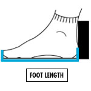

MEN'S FOOTWEAR
CONVERSION CHART
Some brands may vary from these measurements but you can still use them as a guide.
| UK SIZE | EU SIZE | US SIZE | FOOT LENGTH (MM) |
|---|---|---|---|
| 3 | 35.5 | 4 | 220 |
| 4 | 37 | 5 | 229 |
| 5 | 38 | 6 | 237 |
| 6 | 39 | 7 | 246 |
| 7 | 40.5 | 8 | 254 |
| 8 | 42 | 9 | 262 |
| 9 | 43 | 10 | 271 |
| 10 | 44.5 | 11 | 279 |
| 11 | 46 | 12 | 288 |
| 12 | 47 | 13 | 296 |
HOW TO MEASURE
To measure your feet stand on a level floor with the back of your heels against a straight edge or wall
1. FOOT LENGTH
Measure your foot length by placing a ruler flat on the floor straight alongside the inside of your foot from your heel to your toes.
Place an object with a flat edge straight across your toes with the edge touching the tip of your longest toe. Take the measurement (in millimeters) from the ruler where the flat edge crosses (see image below). This is your foot length measurement.
